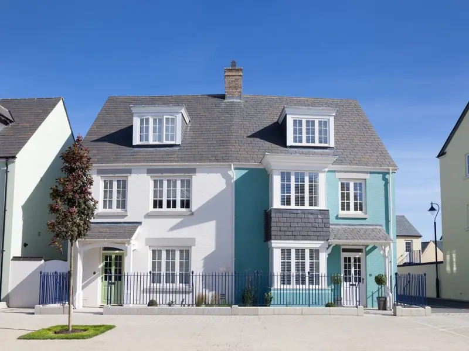
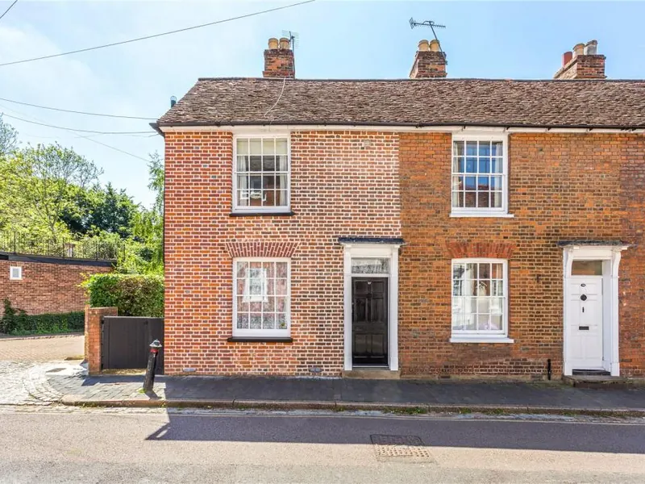
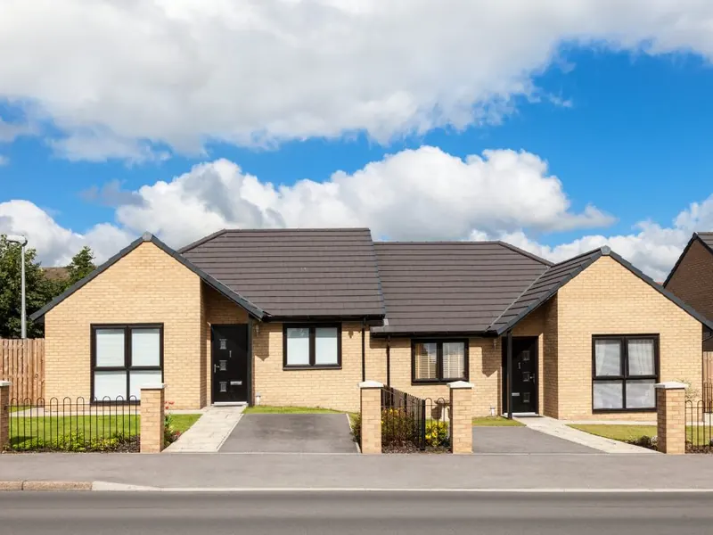
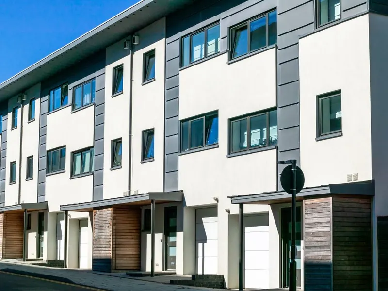

更適切的樓盤選擇
先了解家庭成員、校網、通勤和預算，才開始搜盤，不會把你推向代理手上最想賣的單位。
我們的不同之處
英國的地產代理代表的是賣家。JoyHome 代表的是你：一個在英國生活多年、熟悉社區的顧問。
先了解家庭成員、校網、通勤和預算，才開始搜盤，不會把你推向代理手上最想賣的單位。
每個單位都提供正反分析：街道、Leasehold 年期、維修狀況、轉售及出租潛力，一併寫清楚。
代你出價議價，並轉介可靠的測量師、按揭經紀和律師；議價成功才按差價收取 10%。
人在香港也可以：視像睇樓、相片分析、跟進律師與按揭進度，直到你拿到鎖匙。

關於 JoyHome
移居前後要處理的事情繁多：既要照顧家人需要，又要配合預算，還要與時間表賽跑。單靠網上搜尋，資訊很多，卻沒有人替你判斷。
我們的團隊曾在英國不同城鎮居住、讀書和工作，熟悉各區的生活配套。多年來與當地發展商、服務供應商及地產代理保持緊密聯繫，並對接有信譽的律師、按揭及稅務夥伴。
服務流程
了解心儀地區、位置及物業種類
先聽你的需要：家庭成員、校網、通勤、預算和時間表，再為你篩選合適的地區和樓盤。
縮窄範圍，鎖定目標物業
聯絡代理安排睇樓，提供視像及相片，並就每個單位寫下正反分析，讓你在香港也能作決定。
制定策略，成功入住
代你出價議價，協調測量師、按揭經紀及律師，緊貼整個買賣或租賃流程，直到收樓。
收費清楚
所有收費另加 VAT。睇樓、代辦等其他服務請參閱完整收費表。
買樓或租樓諮詢，提供英國物業及生活資訊，推薦合適樓盤。
Offer accepted 時先付 £180。Hertfordshire 以外地區 £880 起。
海外客戶 £2,880 起。買價協定時先付 £880，餘額成交後才收。
英國房地產知多少
英國人重視家庭生活和居住空間。先認識不同房屋類型的特點，才知道哪一種最適合你的家庭和預算。
獨自一棟，不與其他物業相連。空間感十足，通常有前後大花園及獨立車位。大型的又稱豪宅（Mansion）。
一面牆與鄰屋相連，左右各一戶。私隱度高，多數有前後花園及車位，預算僅次於獨立屋，出租需求亦最穩定。

一整排房屋相連，牆身之間沒有空隙。居住空間較獨立屋少，與鄰居關係較緊密；舊式排屋要留意滲水和結構老化。

只有一層、沒有樓梯的房屋，適合三代同堂或有長者的家庭，土地面積通常較大。

通常是一棟兩層的房屋分成上下兩個單位，各自有獨立入口，價錢介乎公寓和排屋之間。
與香港常見的大廈單位相似。新式公寓有電梯、大堂及會所；舊式可能只有數層、沒有電梯。多為 Leasehold，要留意地租及管理費。
先選定幾個心儀的城市，因為每間代理只服務特定地區。無論租或買，整個流程都涉及法律和稅務，最重要是選擇在英國正式註冊、有良好信譽、熟悉當地社區的代理或顧問。英語不太流利或未去過英國的話，找能說廣東話的顧問會溝通得更清楚。
不可以。英國是業主主導的市場，一般只能約指定日子和時段睇樓，有時更會限時開放。業主亦會挑選買家，不一定價高者得。所以由熟悉流程的顧問替你跟進，才不會錯過時機和重要資訊。
網上相片往往比實際好看。交易前要核實代理身份、看清樓盤資料和條款，最好由熟悉該區的顧問親身睇樓，了解社區配套、校網、交通和治安。我們會以視像及相片分析，把優點和要留意的地方一併告訴你。
英國的節奏比香港慢，需要多一點耐性。但好盤往往同時有幾位買家出價，代理必須緊貼市場、熟悉流程，才能在對的時間替你出價，避免錯過筍盤。
沒有絕對答案，視乎每個家庭的背景、預算和計劃。想找學校，就先鎖定心儀的校網，再搜尋附近的好盤。如果完全未去過英國，我們一般建議先租後買，住一段時間、熟悉生活後再決定。